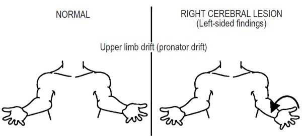
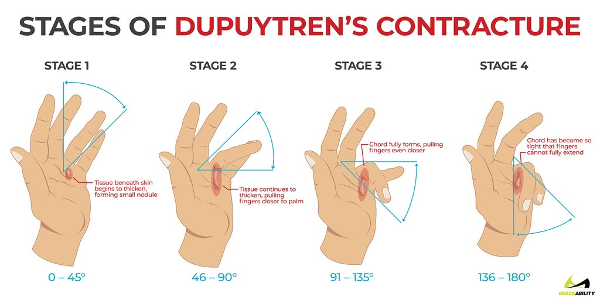
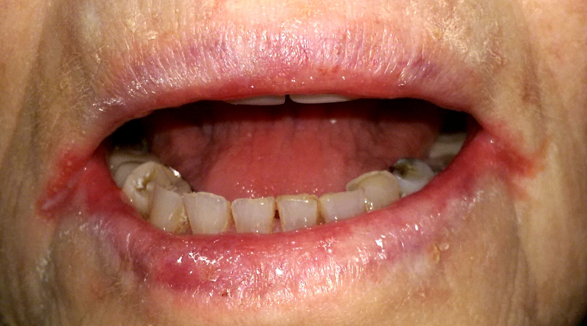

Physical Examination¶
Duke-NUS Check Lists¶
Questions:
- Can we deviate from the order within a category?
Neurological¶
Cranial Nerves¶
Professionalism
- Greets patient, introduces self
- Obtains permission to examine
- Respects patient’s privacy
- Explains to patient as needed
- Uses “Hand Rub” before examination
- Ensures patient’s comfort and safety; does not cause pain
Inspect
- Comment on position/symmetry of forehead wrinkles, eyebrow positions, upper eyelid positions, lower eye lid positions, ocular alignment, nasolabial folds, nostril positions, and corners of mouth
Examine CN II, III, IV & VI
- Screen for integrity of visual pathway by counting fingers (one eye at a time)
- Screen for ophthalmoplegia by drawing a “ + “
- Test for the action of each extra-ocular muscle by drawing a “ H ”
- Left gaze – LLR & RMR (VI and III)
- Left & up gaze – LSR & RIO (III and III)
- Left & down gaze – LIR & RSO (III and IV)
- Right gaze – RLR & LMR (VI and III)
- Right & up gaze – RSR & LIO (III and III)
-
Right & down gaze – RIR & LSO (III and IV)
-
Assess both pupils’ size in room light then ask to dim the lights
- Check for presence of dilatation of both pupils when light is dimmed
- Reassess pupils’ size in dim light
- Check presence of direct and consensual pupillary reflexes of right eye
- Check presence of direct and consensual pupillary reflexes of left eye
- Perform swinging torch test - RPDR
- Check pupillary reflex to near followed by far vision
- Screen for visual field defects
Examine CN VII
- Ask patient to raise both eyebrows
- Ask patient to close both eyes tightly
- Ask patient to smile
- Ask patient to show both upper and lower teeth
- Ask patient to puff out both cheeks
Examine CN V
- Ask patient to open mouth against resistance
- Ask patient to clench teeth and palpate for temporalis & masseter muscles
- Screen for sensory loss by using tooth pick applied over the left and right forehead, L & R cheek, and L & R chin, with eyes closed
- Elicit corneal reflex (if indicated)
- Elicit jaw jerk (if indicated)
Examine CN VIII
- Screen for hearing impairment using tuning fork
- Perform Weber’s test over the forehead
- Perform Rinne’s test
Examine CN X
- Screen for Motor dysfunction of CN X by asking the patient to open mouth and say “Ahhh..”; comment on movements of uvula, soft palate and pharynx wall
Examine CN XII
- Keep mouth opened and inspect tongue for wasting and fasciculation
- Ask patient to protrude the tongue straight, and then ask him/ her to wriggle his/her tongue right ↔ left
- Ask patient to push inside of right and left cheek with his/her tip of tongue
Examine CN XI
- Inspect for wasting of sternocleidomastoid (SCM) and trapezius muscles
- Ask patient to shrug both shoulders against your hands
- Test the left SCM by asking the patient to turn head to the right against your left hand placed over his/her right cheek
- Test the right SCM by asking the patient to turn head to the left against your right hand placed over his/her left cheek
Upper Limb¶
Professionalism
- Greets patient, introduces self
- Obtains permission to examine
- Respects patient’s privacy
- Explains to patient as needed
- Uses “Hand Rub” before examination
- Ensures patient’s comfort and safety; does not cause pain
Inspect
-
I am looking for muscle wasting, contracture, fasciculation, involuntary movements
-
over thenar eminence
- hypothenar eminence
- forearm
- deltoid muscles
of both arms; and I noticed....
Elicit Screen For
- Can you stretch out your hand and close your eyes?
- I am looking for pronator drift and it is present/not present
- Screen for cerebellar dysfunction
- Detect write / finger drops
- Elicit grip myotonia
Check Muscle Tone
- Detect rigidity by flexing and extending right elbow at least 2 times
- Detect rigidity by supinating and pronating right forearm at least 2 times
- Detect spasticity by rapid supination of right forearm at least 2 times
- Detect rigidity by flexing and extending right wrist at least 2 times
- Detect rigidity by flexing and extending left elbow at least 2 times
- Detect rigidity by supinating and pronating left forearm at least 2 times 01
- Detect spasticity by rapid supination of left forearm at least 2 times 01
- Detect rigidity by flexing and extending left wrist at least 2 times
Elicit Deep Tendon Reflexes
- Elicit right biceps reflex and describe the response
- Elicit left biceps reflex and describe the response
- Elicit right brachioradialis reflex and describe the response
- Elicit left brachioradialis reflex and describe the response
- Elicit right triceps reflex and describe the response
- Elicit left triceps reflex and describe the response
Test For Power
- Simultaneously test right & left shoulder abduction against resistance
- Test right wrist extension against resistance
- Test left wrist extension against resistance
Elicit Cerebellar Signs
- Perform right finger to nose test - dysmetria
- Perform left finger to nose test
- Perform alternating pronation and supination of right & left hands - dysdiadochokinesia
- Can you point at my finger and then your own nose like this? And do it quickly.
- There is / is no dysmetria (cerebellar dysfunction)
- Can you flip your hand back and forth like this as fast as your can?
- There is / is no dysdiadochokinesia (cerebellar dysfunction)
Perform Sensory Testing
- Use a toothpick to verify sharp and blunt sensation over forehead
- Compare sharp sensation over right and left C5,6,7,8 & T1
- Verify presence and absence of vibration sensation over forehead
- Perform vibration sense testing over any bony point of hand on both sides
Lower Limbs¶
Professionalism
- Greets patient, introduces self
- Obtains permission to examine
- Respects patient’s privacy
- Explains to patient as needed
- Uses “Hand Rub” before examination
- Ensures patient’s comfort and safety; does not cause pain
Inspect
-
I am looking for the presence or absence of muscle wasting, fasciculation, contracture, and involuntary movements
-
Quadriceps
- Tibialis Anterior
- Calf Muscles
of both legs
- Screen for “foot-drop” by asking the patient to dorsiflex both ankles
Check Muscle Tone
- Ask for pain in knee and hip of both sides before checking rigidity and spasticity
- Detect rigidity by flexing right hip & knee at least 2 times
- Detect spasticity by rapidly lifting minimally flexed right knee
- Detect rigidity by flexing left hip & knee at least 2 times
- Detect spasticity by rapidly lifting minimally flexed left knee
- Elicit ankle clonus by rapidly dorsiflexing the right ankle
- Elicit ankle clonus rapidly dorsiflexing the left ankle
Elicit Deep Tendon Reflexes
- Elicit right knee reflex and describe the response
- Elicit left knee reflex and describe the response
- Elicit right ankle reflex and describe the response
- Elicit left ankle reflex and describe the response
Elicit Plantar Responses
- Elicit left plantar response and describe the response
- Elicit right plantar response and describe the response
Test for Power
- Test right hip flexion against resistance
- Test left hip flexion against resistance
- Test right ankle dorsiflexion against resistance
- Test left ankle dorsiflexion against resistance
Elicit Cerebellar Signs
- Perform right heel to left shin test
- Perform left heel to right shin test
Perform Sensory Testing
- Use a toothpick to verify sharp and blunt sensation over forehead
- Compare sharp sensation over right and left L2,3,4,5 & S1
- Verify presence and absence of vibration sensation over forehead
- Perform vibration sense testing over the right and left medial malleoli
- Perform position sense testing on right and left big toes
Examine Gait
- Ask patient to stand up from sitting position without hand support
- Assess for truncal ataxia
- Perform Romberg’s test
- Ask patient to walk normally, observe gait & arm swing
- Ask patient to perform forward tandem walking
- Ask patient to walk on heels
- Ask patient to walk on toes
ENT¶
Professionalism
- Greets patient, introduces self
- Obtains permission to examine
- Respects patient’s privacy
- Explains to patient as needed
- Uses “Hand Rub” before examination
- Ensures patient’s comfort and safety; does not cause pain
Ears (both sides unless otherwise specified)
- Inspect (describe) auricles – helix, antihelix, tragus, earlobe, back of ears & palpate mastoid
- Examine ear with otoscope (R ear only)
- Estimate hearing
- Perform Weber test
- Perform Rinne test (R ear only)
NOSE (both sides)
- Inspect (describe) front, side & inferior of nose for asymmetry or depression
- Test for nasal obstruction
- Inspect (describe) inside of nose with otoscope – nasal mucosa, nasal septum
- Palpate for frontal sinus tenderness
- Palpate for maxillary sinus tenderness
MOUTH
- Inspect (describe) lips
- Inspect (describe) labial mucosa, alveolar mucosa, teeth, buccal mucosa, parotid duct
- Inspect (describe) roof of mouth
- Inspect (describe) floor of mouth – frenulum & submand ducts
- Inspect (describe) pharynx – anterior pillar, posterior pillar, tonsil, pharynx
- Say "Ah” & observe elevation of soft palate
- Stick out tongue, inspect dorsum and move tongue side to side
- Hold tip of tongue and pull to side to palpate
NECK
INSPECTION and describe:
- Thyroid cartilage
- Cricoid cartilage
- Thyroid gland with swallowing
- Feel for deviation of trachea
EXAMINE LYMPH NODES and describe:
- Preauricular
- Posterior auricular (mastoid)
- Occipital
- Posterior cervical
- Supraclavicular
- Anterior (superficial & deep) cervical
- Tonsillar (jugulodigastric)
- Submandibular
- Submental
EXAMINE THYROID:
- Palpate without swallowing
- Palpate with swallowing
Cardiovascular¶
Professionalism
- Greets patient, introduces self
- Obtains permission to examine
- Respects patient’s privacy
- Explains to patient as needed
- Uses “Hand Rub” before examination
- Ensures patient’s comfort and safety; does not cause pain
Examination Steps
- Position the patient at 450 supine position
- General inspection (describe)
- general (comfort, alertness, breathlessness, cyanosis);
- syndromes (Turner’s, Marfan’s, Trisomy);
-
endocrine (thyrotoxicosis, acromegaly)
-
Inspect hands (describe) – peripheral cyanosis, clubbing, splinter haemorrhages, Osler’s nodes, Janeway lesions, and tendon xanthomas.
- Inspect forearms (describe) – antecubital fossa (needle marks), elbows (tuberoeruptive xanthomas)
- Palpate the (R) radial pulse ≥ 15 seconds and describe rate & rhythm; count respiratory rate ≥ 15 seconds
- Palpate both radial pulses simultaneously for symmetry
- Palpate (R) radial & (R) femoral pulses simultaneously for delay (ask permission for exposure)
- Check for shoulder pain, then palpate for collapsing pulse
- Inspect face (describe)
- eyes (xanthelasma, subconj haemorrhage, pallor, jaundice);
- face (malar flush);
- oral (central cyanosis, high arch palate)
- Inspect neck (describe) – Corrigan’s sign, JVP; perform abdominojugular reflux
- Auscultate (R) carotid artery and if no bruit proceed to palpate for character of pulse with thumb or 2-finger method
- Expose the anterior chest wall adequately
- Inspect anterior chest wall (describe) – scars, pacemaker or AICD, skeletal abnormalities, visible apex beat
- Place hand on precordium for apex beat and thrill; turn patient to left if not palpable. Locate and describe the apex beat.
- Left parasternal lift; left sternal edge thrill
- Palpate pulmonary area for palpable P2 and thrill
- Palpate over aortic area for thrill
- Auscultate using diaphragm at mitral area
- Time the heart sounds by palpating the right carotid pulse
- Auscultate mitral area again now using bell
- Turn patient to the left, continue to auscultate mitral area with bell
- Turn patient back on his/her back, auscultate left sternal edge (lower, then upper) with diaphragm
- Auscultate pulmonary area with diaphragm
- Auscultate aortic area with diaphragm
- Auscultate right and left carotid arteries with diaphragm for radiation
- Have patient sit up, lean forward, breath out, and auscultate left sternal edge (third intercostal space) and right sternal edge (second intercostal space) with diaphragm
- Inspect the back for abnormalities of the cervical and thoracic spine
- Auscultate both bases of lung
- Inspect lower limbs (describe) – edema, cyanosis, clubbing, injection marks, surgical scar (saphenous vein graft for CABG)
- Mention “I will complete the examination by checking the BP, urine, temperature, palpate for liver & spleen, and a fundoscopy.”
Respiratory¶
Professionalism
- Greets patient, introduces self
- Obtains permission to examine
- Respects patient’s privacy
- Explains to patient as needed
- Uses “Hand Rub” before examination
- Ensures patient’s comfort and safety; does not cause pain
Examination Steps
- Position the patient at 45° supine position
- General inspection (describe): comfort, mental alertness, nutrition, breathlessness, cyanosis, oxygen mask, metered dose inhalers, sputum mug, hoarseness of voice
- Inspect hands (describe): clubbing, tar staining, peripheral cyanosis, wasting of small muscles of hands
- Count respiration x 15 sec & describe rate, rhythm and depth; count pulse rate x 15s, feel for bounding pulse
- Test for flapping tremor x 15 sec
- Inspect face (describe): ptosis & constricted pupil (Horner’s syndrome), conjunctival pallor, tongue for central cyanosis
- Expose the neck and anterior chest wall adequately
- Inspect (describe): neck (accessory muscles, neck masses, distended veins) and anterior chest (shape, scar, dilated vessels, chest expansion, abnormal chest wall movements)
- Examine JVP and perform abdominojugular reflux
- Determine tracheal position
- Examine chest expansion anteriorly: upper, mid and lower
- Perform tactile fremitus using “99”: upper, mid and lower
- Percuss chest anteriorly: supraclavicular fossae, clavicles, mid-clavicular line
- Percuss chest laterally on both sides
- Auscultate lung fields anteriorly
- Auscultate lung fields laterally
- Perform vocal resonance using “99”
- Adequate exposure of posterior chest wall (spread scapulae)
- Inspect posterior chest wall (describe): similar to anterior chest and include spinal abnormalities
- Examine chest expansion posteriorly: mid and lower only
- Perform tactile fremitus using “99”: similar to anterior chest but avoid scapulae
- Percuss the chest posteriorly: similar to anterior chest but avoid scapulae
- Auscultate the lungs posteriorly: similar to anterior chest but avoid scapulae
- Perform vocal resonance using “99: similar to anterior chest but avoid scapulae
- Examine for lower limb edema
- Mention “I will complete my examination by looking at sputum mug & temperature chart, and examining for neck masses”
Abdominal¶
Professionalism
- Greets patient, introduces self
- Obtains permission to examine
- Respects patient’s privacy
- Explains to patient as needed
- Uses “Hand Rub” before examination
- Ensures patient’s comfort and safety; does not cause pain
Examination
- Lie patient at 0 degrees supine, one pillow to support the head
- General inspection (describe) – comfort, nutrition, mental state and skin colour
- Inspect hands and arms (describe) – koilonychia, leuconychia, clubbing, palmar erythema, Dupuytren’s, scratch marks, ecchymosis
- Inspect eyes (describe) – xanthelasma, jaundice, pallor
- Inspect mouth (describe) – telangiectasia, cheilosis, pigmentation, oral ulcers, glossitis, central cyanosis
- Inspect (describe) and palpate parotids
- Inspect chest and upper limbs(describe) – spider nevi, gynecomastia, axillary hair, acanthosis nigricans
- Adequate exposure of the abdomen (xiphoid to just above pubic symphysis with permission from SP)
- Inspect the abdomen (describe) – shape, movement, scars, bowel loops and vessels
- Ask patient whether there is any pain
- Perform 9-quadrant superficial palpation while looking at patient’s face
- Perform 9-quadrant deep palpation while looking at patient’s face
- Palpate for liver edge along mid-clavicular line from RIF upwards
- Percuss for liver dullness – confirm lower edge and locate upper edges
- Liver span using tailor’s measuring tape
- Palpate for spleen from RIF towards left upper quadrant; if not palpable turn patient towards candidate and palpate again
- Percuss for splenic dullness up to the mid-axillary line (Traube space)
- Ballot kidneys
- Shifting dullness – percuss away from midline, turn, percuss back to midline
- Auscultate for bowel sounds and renal bruits
- Sit patient up to test for liver flap
- Renal punch
- Sacral edema
- Palpate the Virchow’s nodes
- Lower limb edema
- Say “I would like to examine fully the cervical nodes.”
- Say “I will complete my examination by examining the inguinal region, genitalia and rectum."
MSK¶
Spine¶
Professionalism
- Greets patient, introduces self
- Obtains permission to examine
- Respects patient’s privacy
- Explains to patient as needed
- Uses “Hand Rub” before examination
- Ensures patient’s comfort and safety; does not cause pain
LOOK
- LOOK and describe from back: muscle wasting, asymmetry, scoliosis
- LOOK and describe from side: cx lordosis, thx kyphosis, lumbar lordosis
FEEL
- Spinous processes
- Sacroiliac joints
- Paraspinal muscles
MOVE
- Lumbar flexion & extension (place 2 or 3 fingers over lumbar spine)
- Lateral flexion (run hand down outside of adjacent leg)
- Tilt head (ear touch shoulder)
- Turn head (look over shoulder)
- Head bend forward (chin touch chest)
- Head bend backward
- Thoracic rotation whilst seated on couch
- Lie pt down for straight leg raising & dorsiflexion of foot
- Check UL reflexes (BJ, SJ, TJ)
- Check LL reflexes (KJ, AJ)
- Check strength of dorsiflexion of big toe (both sides)
- Dorsalis pedis & posterior tibial pulses (both sides)
Upper Limb¶
Professionalism
- Greets patient, introduces self
- Obtains permission to examine
- Respects patient’s privacy
- Explains to patient as needed
- Uses “Hand Rub” before examination
- Ensures patient’s comfort and safety; does not cause pain
Lower Limb¶
Professionalism
- Greets patient, introduces self
- Obtains permission to examine
- Respects patient’s privacy
- Explains to patient as needed
- Uses “Hand Rub” before examination
- Ensures patient’s comfort and safety; does not cause pain
Hips
LOOK and describe: with patient lying down
- Scars
- Flexion deformity
- Leg length disparity (square pelvis)
FEEL:
- Greater trochanter for tenderness
MOVE (passive):
- Flexion
- Internal and external rotation with knee & hip flexed at 90 degrees
- Thomas’ test (test one side)
FUNCTION (describe with patient standing):
- Gluteal bulk
- Trendelenberg test
- Test gait
Knees
LOOK and describe with patient lying down:
- Scars and swelling
- Muscle wasting (vastus medialis)
- Varus or valgus deformity
- Fixed flexion deformity
FEEL:
- Skin temperature
- Borders of patella
- Patella tap AND cross fluctuation
- Popliteal fossa
- Joint line with knee flexed (patella tendon, joint line, collateral ligaments)
MOVE:
- Flexion and extension (passive and active)
- Check for posterior sag
- Perform anterior drawer test
- Assess medial and lateral collateral ligaments (one side only)
FUNCTION (describe with patient standing):
- Valgus or varus deformity
- Popliteal swelling
- Gait
Foot and Ankle
LOOK (describe) with pt lying down:
- Dorsal surface & plantar surface (nail changes, skin changes, joint swelling, deformities, clawing of toes, callosities)
- Footwear
FEEL:
- Temperature (ankle, forefoot, toes)
- Pulses (dorsalis pedis)
- Squeeze MTPJs (watch pt’s face)
- Midfoot, ankle joint line, subtalar for tenderness
MOVE:
- Ankle (tibio-talar): dorsi- & plantar flexion (active & passive)
- Subtalar: inversion & eversion (active & passive)
- Midtarsal: rotation (active & passive)
- Big toe: dorsi- & plantar flexion (active & passive)
FUNCTION:
- Standing: look at forefoot (toe alignment), midfoot (arch), hindfoot (Achilles tendon, valgus, varus)
- Gait: heel strike, stance, toe-off
Duke-NUS Checklist Remarks¶
Neurology¶
Lower Limb¶
Step 1: Inspect and Screen
| Tasks | Technique (How To Examine?) | Observation (What To Look Out For?) | Normal Response | Remarks |
|---|---|---|---|---|
| Inspect for Muscle Wasting | Expose the lower limbs as much as possible: e.g. fold the pants as high as possible. Inspect systematically from distal to proximal (or promixal to distal) part of the lower limbs. | Look for presence of muscle wasting in both feet (sole of feet, extensor digitorum brevis), legs (tibialis anterior, gastrocnemius- soleus) and thighs (vasti). Check for symmetry (left vs right) as well as proximal vs distal. | Normal muscle bulks with no asymmetry in both lower limbs. | Wasting indicates disuse atrophy, lower motor neuron lesion or others. |
| Inspect for Fasciculation & Involuntary Movements | Ask the patient not to move his lower limbs and continue to relax. | Look out for presence of fasciculation (muscle twitches) and any abnormal movement at this stage as well as throughout the whole period of neurological examination. | No obvious muscle twitches throughout the period of examination. | Fasciculation indicates active denervation if associated with wasting and weakness. |
| Screen for Foot Drop | Ask the patient to dorsiflex both ankles. | Assess the degree of dorsiflexion of ankles and compare both sides. | Both ankles fully & symmetrically dorsiflexed. | Foot drops indicate possible neurological disorder (e.g. common or deep peroneal nerve palsy, peripheral neuropathy, sciatic neuropathy, lumbosacral plexopathy, lumbar radiculopathy, and others), muscular and/or anatomic dysfunction |
Examination Details¶
Neurology¶
Webber's Test and Rinne's Test¶
The Weber test is a screening test for hearing performed with a tuning fork. It can detect unilateral (one-sided) conductive hearing loss (middle ear hearing loss) and unilateral sensorineural hearing loss (inner ear hearing loss).
- Flip the W in Webber to M to remember that this is the test that places the tuning fork on the midline of the forehead.
- Conductive hearing loss laterialises to the affected side - conductive deficit masks the ambient noise in the room, allowing the sound to be better heard
- NSHL hearing loss laterialises to the unaffected side - the inner ear on the affected side is impaired and does not allow sound to be heard
The Rinne test is used primarily to evaluate loss of hearing in one ear. It compares perception of sounds transmitted by air conduction to those transmitted by bone conduction through the mastoid. Thus, one can quickly screen for the presence of conductive hearing loss.
- Positive Rinne is alphabetical i.e. A**C > **B**C, and is **NORMAL! Indicates that C**onduction is **OK
| Condition | Rinne | Weber |
|---|---|---|
| Normal | AC > BC in both ears | Midline |
| Conductive hearing loss | BC > AC in affect ear | Lateralizes to the affected ear |
| Sensorineural hearing loss | AC > BC in both ears | Lateralizes to the unaffected ear |
| Mixed hearing loss | BC > AC in affect ear | Lateralizes to the unaffected ear |
512 Hz tuning fork for testing because
- it is present in the mid speech frequency range
- Minmals over tones
- Sounds are more auditory than tactile in nature
- Tone decay is optimal
Other possible range are 218, 512, and 1024 Hz
Pronator Drift¶

When the patient extends both arms upright in the supinated position and hold them at shoulder height for atleast 10 seconds (Patients should be asked to keep eyes open initially and later test again with eyes closed):
- Normal response:
- Palm will remain flat, elbows straight and the limbs horizontal OR
- Symmetrical deviation from this position (i.e. on both the sides – dominant hand may pronate slightly more than the non-dominant hand)
- Positive pronator drift:
- Components of pronator drift as mentioned above is seen in the weaker side (asymmetric response) which indicates a lesion in contralateral
- Pseduodrift:
- Slight pronation, without downward drift of the dominant arm
- Not necessarily abnormal – must be interpreted in clinical context
Interpretation of positive pronator drift:
- Positive with eyes open: Motor deficit
- Positive with eyes closed: Sensory deficit (Posterior column)
- Outward and upward drift: Cerebellar drift
- “Updrift” (involved arm rising overhead without patient awareness): Parietal lobe lesions (loss of position sense)
- Drift without pronation: Functional upper limb paresis (Conversion disorder)
Mechanism of pronator drift:
According to Phylogenetic theory of Gierlich:
- Similar reflex was seen in newborns with pyramidal system not fully developed – confirmation that this sign was related to dysfunction of the pyramidal tract
- Pronation, associated with flexion and abduction movements, represents the most important movement in amphibians, fish and reptiles – necessary to set the water back and to move forward, and that it is still strongly present in mammals.
- A complete supination is possible only among the most evolved animals, so that the palm of the hand can be completely turned upwards; the second part of the outward rotation movement appears then to be related to the formation and development of the pyramidal pathways.
Thus, the pronation dependent upon phylogenetically older subcortical centers overpower those dependent upon phylogenetically newer pyramidal system when impaired. Moreover, some neurologists have proposed that, phylogenetically younger structures like pyramidal tract have more propensity to be affected by pathological processes compared to older structures.
Other authors have proposed that:
- Cortico-spinal tract (CST) muscles in the upper extremity are the extensors, supinators and abductors
- These CST muscles are minimally weak in subtle CST lesions
- Hence, the uninvolved and stronger non-CST muscles overcome the minimally weakened CST muscles – elbow flexes, hand pronates and the arm drifts downwards
- If the whole area of cortex supplying a limb is damaged, the extrapyramidal pathways are unable to take over and an acute global flaccid paralysis of the limb occurs
Romberg's Test¶
The Romberg test is a test of the body's sense of positioning (proprioception), which requires healthy functioning of the dorsal columns of the spinal cord. The Romberg test is used to investigate the cause of loss of motor coordination (ataxia).
A positive Romberg test suggests that the ataxia is sensory in nature, that is, depending on loss of proprioception. If a patient is ataxic and Romberg's test is not positive, it suggests that ataxia is cerebellar in nature, that is, depending on localized cerebellar dysfunction instead.
Abdominal¶
Dupuytren’s Contracture¶
Dupuytren's (du-pwe-TRANZ) contracture is a hand deformity that usually develops over years. The condition affects a layer of tissue that lies under the skin of your palm. Knots of tissue form under the skin — eventually creating a thick cord that can pull one or more fingers into a bent position.

Angular Cheilitis or Cheilosis¶
Cheilosis (also called cheilitis) is a painful inflammation and cracking of the corners of the mouth. It sometimes occurs on only one side of the mouth, but usually involves both sides. Angular cheilitis is common and affects children and adults, especially when they are in poor health. This disorder occurs most frequently in people with ill-fitting dentures that fail to adequately separate the upper and lower jaws.

Causes
- A dribble of saliva causing eczematous cheilitis, a form of contact irritant dermatitis
- An overhang of upper lip resulting in deep furrows (marionette lines)
- Dry chapped lips
- Proliferation of bacteria (impetigo - Staph Aureus), yeasts (thrush - Candida albicans) or virus (cold sores - Herpes Simplex).
Risks
- Oral thrush: infancy, old age, diabetes, systemic corticosteroid or antibiotic use
- Dentures, especially if they are poor fitting, and there is associated gum recession
- Poor nutrition: coeliac disease, iron deficiency, riboflavin deficiency
- Systemic illness, particularly inflammatory bowel disease (ulcerative colitis and Crohn disease)
- Sensitive skin, especially atopic dermatitis
- Genetic predisposition, for example in Down syndrome
- Oral retinoid medication: isotretinoin for acne, acitretin for psoriasis.
Treatment
In many cases, no treatment is needed and angular cheilitis resolves by itself. Depending on the specific cause, the following treatments may be useful:
- Lip balm or thick emollient ointment, applied frequently
- Topical antiseptics
- Topical or oral antistaphylococcal antibiotic
- Topical antifungal cream
- Oral antifungal medication
- Topical steroid ointment
- Nutritional supplements
- Filler injections or implants to build up the oral commissures
- Botulinum toxin to smooth out the lines.